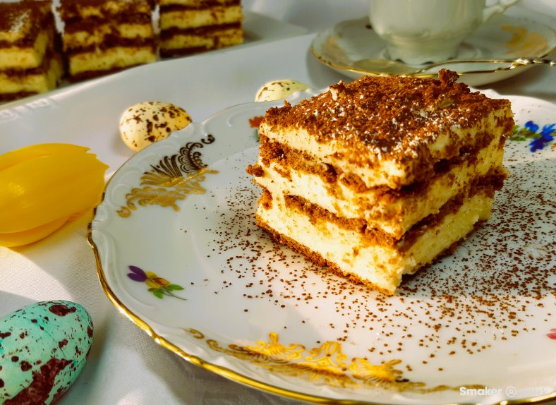
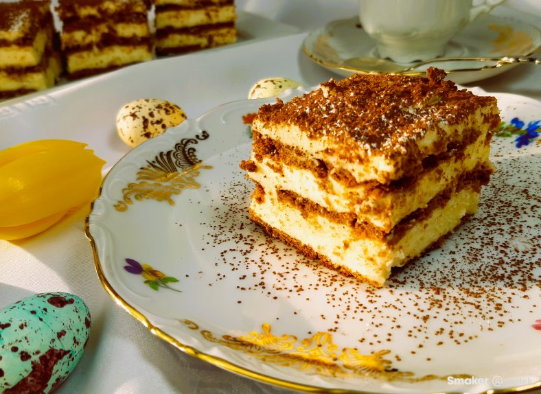

Adwokat
Godzina wejścia na stronę:
Oryginalny przepis na ciasto adwokat w serwisie smaker.pl
Przejdź do przepisuNiepoprawne hasło

Godzina wejścia na stronę:
Oryginalny przepis na ciasto adwokat w serwisie smaker.pl
Przejdź do przepisu